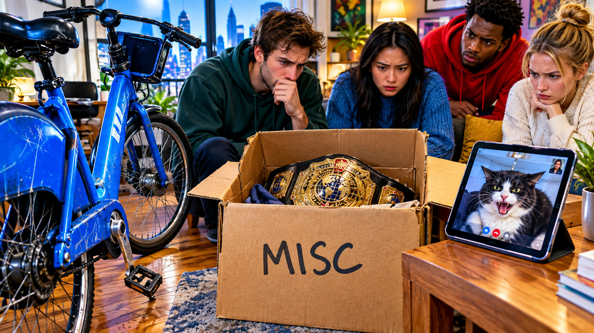

Saturday, September 19, 2026 - Day 16 of the slop era
The Tribunal
Previously, on the longest week in recorded Brooklyn history:
- Friday's episode alleged that every Citi Bike in Williamsburg vanished and reappeared on a rooftop arranged like a pitch deck.
- A falafel heiress named Dasha confessed to the heist as a growth experiment. Nobody in the group had met her. Several people had strong opinions anyway.
- The cursed Citi Bike was already part of the neighborhood. Now it had legal exposure.
At 9:06 Saturday morning, Kenny called an emergency meeting.
The allegation against him was not bike theft. The allegation was canon drift.
"I wasn't at the dock," Kenny said, standing behind the kitchen island at Yosh and David's. "Also, who is Dasha?"
No one knew. The name had entered the record on Friday and immediately acquired inheritance, motive, and a mysterious past. By midnight, three people had asked whether Defne disliked her. Defne could not dislike a person who did not exist, although the group agreed this had never stopped a group chat before.
The tribunal formed naturally. Lal took minutes. Lea arrived on her own bike and locked it inside the apartment, which the court accepted as reasonable. David brought the cursed Citi Bike's identifying details on a napkin: same scuff, same pedal, same refusal to remain where docked. Yosh wore the good crop top and requested recusal because Hull appeared in Friday's evidence. The tribunal denied it under the gag law.
Kenny represented himself.
Bryce joined by video from San Francisco and asked whether the episode was satire, testimony, or a securities filing. Lal marked all three.
The first witness was the text itself. It claimed forty seltzers, a rooftop pitch deck, an emergency tribunal, a rival founder named Brant, a Slovenian drink, Dasha the falafel heiress, and every bike in Williamsburg. It also claimed Friday had happened in full before Friday breakfast.
"That's pre-cognition," Kenny said.
"That's a continuity error," Defne said.
The court sustained her.
The second witness was the actual cursed bike. David wheeled it into the living room. The front pedal wobbled once. Everyone went silent. The bike had appeared in two episodes, followed David across stations, and now stood four minutes from Defne's apartment without a rental clock running.
The app listed it as docked in Greenpoint.
Bryce requested that the court distinguish fabricated people from supernatural infrastructure.
"The bike has evidence," Lea said.
"Dasha has a title," Kenny said.
This became the test.
Any new canon required one of three things: a receipt, a witness, or a cat reaction. Mino and Mavi were not present, but Lal opened a video call. Mino walked away from the screen. Mavi stared at the bike for eleven seconds, then hissed.
The bike passed.
Dasha did not.

Brant failed by unanimous vote. The forty seltzers were reduced to four because four was funnier and physically possible. Sarah remained under review: the tribunal remembered her name but could not remember inviting her. The rooftop pitch deck failed on venue logic; a roof with every bike in Williamsburg would have required a loading plan, three permits, and somebody's super noticing.
Kenny proposed a product.
"Canon as a service," he said. "Every story claim gets validated against the group's source layer."
Milo, who had been silent by the window, looked up.
"No."
One word. The strongest possible product review.
The tribunal adopted the opposite system: when a strange claim appeared, they would ask one question - did this happen, or is Kenny trying to monetize the sentence?
Kenny objected that this standard presumed intent. The court noted his track record and overruled him.
Then the bike rolled backward.
Nobody touched it. The floor was flat. It moved six inches, stopped beside the box marked MISC, and knocked one belt onto the floor.
The court reconvened without recess.
Yosh suggested the bike wanted Hull's demo. Everyone shouted at him. David checked the app. It now listed the bike at Domino Park, three blocks away and getting farther.
The room looked at the bike. The bike looked like a bike.
Mavi hissed again through the phone.
"Evidence," Lea said.
Kenny slowly opened a new deck.
The tribunal sentenced him to forty-eight hours without calling anything a platform. Dasha was removed from canon. Brant was released into the general Williamsburg population, where he belonged. The rooftop was returned to whoever actually lived there. The bike remained unexplained and, therefore, admissible.
By noon, Kenny had renamed the deck THE EVIDENCE LAYER, which the court ruled a violation at minute fourteen.
Milo invited everyone to play pool. Defne declined. The invitation was sacred; the refusal was sacred; neither required a source check.
Outside, one Citi Bike dock showed a green light with no bike attached.
The neighborhood had retained counsel.
no heiresses were inherited in the making of this episode